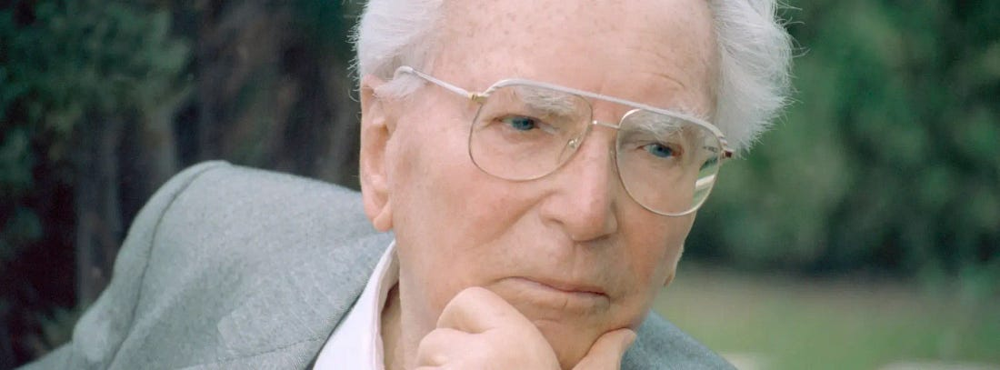
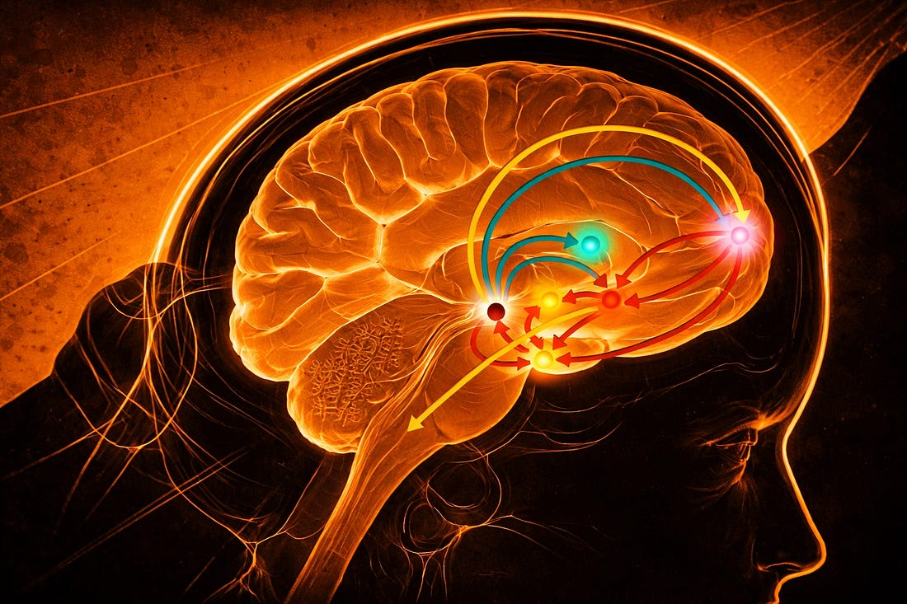
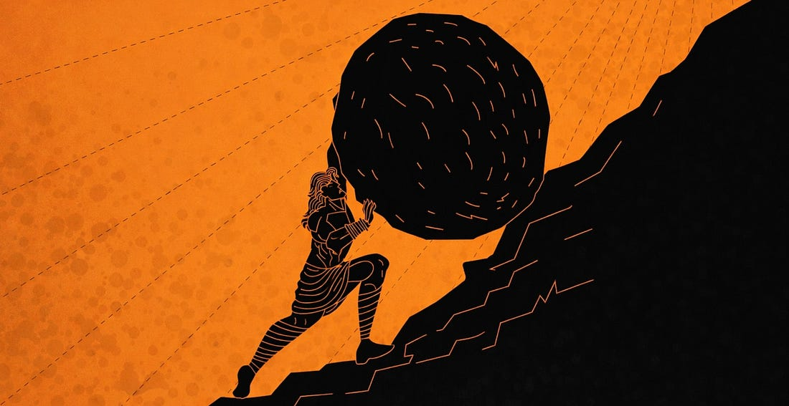
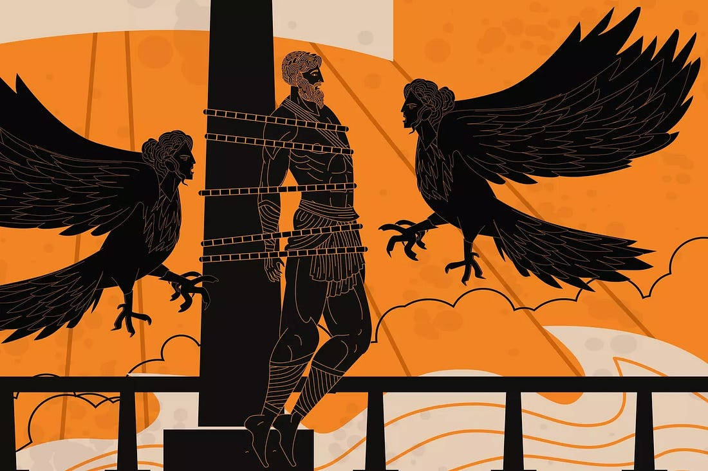

Une question mal posée
Il y a 5 ans, j’ai eu une discussion avec une amie qui venait de courir un marathon. À cette époque, ayant moi-même envie d’en courir un, je lui ai demandé, assez naïvement, comment elle avait vécu la course, si “elle n’avait pas trop souffert”.
Elle m’a répondu que cette question ne s’était pas posée. Elle courait à la mémoire d’un proche perdu récemment. Dans ce contexte, la souffrance n’était pas absente, mais elle était devenue secondaire.
Ce moment a été un premier déclic. Il m’a fait réaliser qu’il existe des situations difficiles dans lesquelles la souffrance n’est plus un problème en soi. À partir de ce constat, la perception qu’on en a change complètement.
L’objectif de cet essai est de revenir sur cette intuition : comprendre ce que l’on met derrière la souffrance, et proposer une manière de la sublimer.
Ce que cela suppose
Le terme de souffrance est souvent utilisé de manière large, sans distinction claire entre la douleur physique, l’inconfort mental, la frustration ou le sentiment d’absurdité. Pourtant, ces dimensions ne recouvrent pas exactement la même réalité.
L’hypothèse qui guide cet essai est la suivante : ce qui rend la souffrance difficile à supporter n’est pas uniquement son intensité, mais la place qu’elle occupe dans notre existence, et la manière dont nous l’interprétons. Une même expérience peut être vécue comme insupportable ou comme nécessaire selon le cadre dans lequel elle s’inscrit.
Ce raisonnement s’appuie sur trois piliers que j’essaie d’articuler ensemble : la pensée de certains philosophes qui ont fait de la souffrance un objet central, un mécanisme neurobiologique qui explique pourquoi le sens agit concrètement sur la douleur, et ma propre expérience.
L’homme qui tenait debout dans les camps
Viktor Frankl, psychiatre autrichien, a survécu à quatre camps de concentration nazis : Auschwitz, Dachau, Kaufering, Türkheim. Ce qu’il y a observé n’est pas de l’ordre de la théorie, c’est une constatation arrachée à l’expérience la plus extrême qui soit.

Dans des conditions où tout est retiré, liberté, dignité, chaleur, nourriture, il observe que certains tiennent quand d’autres s’effondrent. Et ce qui les distingue n’est pas la force physique, ni même le hasard des conditions. C’est la capacité à maintenir une raison d’être.
Certains survivaient parce qu’ils pensaient à retrouver un proche. D’autres parce qu’ils portaient en eux une œuvre inachevée, un témoignage à rendre, une promesse à honorer. Frankl lui-même pensait à sa femme, dont il ne savait pas encore qu’elle était morte. Cette pensée l’a maintenu debout.
Son intuition centrale, qu’il développera ensuite dans Man’s Search for Meaning : on peut supporter presque n’importe quel comment si l’on a un pourquoi suffisamment fort. La souffrance ne disparaît pas, mais elle cesse d’être absurde dès lors qu’elle s’inscrit dans une direction. Elle n’est plus simplement subie : elle devient portée . Et ce déplacement change tout.
Choisir sa souffrance
Il y a une citation de Sahil Bloom que j’aime beaucoup et qui éclaire ce point de manière directe :
Il est difficile de construire des relations profondes et sincères. Mais il est aussi difficile de rester en surface avec tout le monde. Il est difficile de bâtir le corps qu’on désire. Mais il est tout aussi difficile de le voir se détériorer faute d’usage. Il est difficile de créer une vie pleine de sens. Mais vivre sans but est une autre forme de souffrance. Choisis ta souffrance.
Ce que cette citation met en lumière, c’est que la souffrance n’est pas une anomalie à corriger. Elle fait partie de la condition humaine. La question n’est donc pas comment l’éviter, mais laquelle choisir et pourquoi .
Une fois qu’on admet ça, la question n’est plus “comment souffrir le moins possible”, mais “est-ce que cette souffrance me sert à construire quelque chose ?” Est-ce qu’elle me rapproche d’une version de moi-même plus accomplie, d’une vie qui correspond davantage à qui je suis, à ce vers quoi je tends ?
Si l’on croit qu’il existe en chacun de nous une ligne idéale à approcher par itérations, alors la souffrance orientée vers cette ligne n’est pas un problème. C’est un passage obligé.
Quand la douleur devient un carburant
Ce cadre ne repose pas uniquement sur une intuition philosophique. Il trouve un ancrage neurobiologique dans le fonctionnement du circuit de la récompense.
La dopamine oriente nos comportements en fonction des bénéfices anticipés . Elle ne s’active pas seulement lorsque le plaisir est obtenu, mais surtout lorsqu’il est attendu. Un effort inscrit dans une trajectoire claire : s’entraîner, construire une relation, poursuivre un projet, est perçu par le cerveau comme un chemin vers une récompense. Ce mécanisme rend la douleur, physique ou psychologique, beaucoup plus tolérable. Elle est portée par quelque chose de plus grand qu’elle.
À l’inverse, lorsque la souffrance n’est reliée à aucune finalité, il se produit quelque chose de plus lourd : non seulement la douleur est là, mais la dopamine chute, et avec elle arrive la frustration, le sentiment de manque, l’impression que rien ne vaut la peine. C’est une double peine. On ne souffre plus pour quelque chose : on souffre, et en plus on ressent l’absence de sens comme une douleur supplémentaire.
Ce n’est donc pas la présence de la souffrance qui détermine notre expérience. C’est sa place dans le circuit : comme passage vers un bien, ou comme impasse.

L’éternel insatisfait
Il y a un danger dans ce raisonnement qu’il faut nommer clairement : celui de l’éternel insatisfait. Cette figure du développement personnel à outrance qui se dit chaque matin qu’il doit faire mieux, aller plus loin, retarder encore le plaisir au profit d’un futur hypothétique. Et qui finit par se demander, à cinquante ans : quand est-ce que je profite, au fond ?
Endurer pour quelque chose de futur est vertueux jusqu’à un certain point. Mais si ce point n’est jamais atteint, si la célébration est toujours remise à plus tard, alors on passe à côté de l’essentiel.
S’entraîner à fond, oui. Mais aussi apprendre à célébrer à fond : une course terminée, un projet livré, une promotion reçue. Passer du temps sans agenda avec les gens qu’on aime. Regarder derrière soi et laisser entrer la fierté. Ces phases ne sont pas des pauses dans la vie : elles en font partie. Elles justifient l’effort, elles lui donnent une saveur. Et cette logique de cycles est la seule qui soit vraiment viable sur le long terme.
Ma relation personnelle à la souffrance
Il y a quelques mois, j’ai couru un ultra-trail, une course de plus de 24 heures. Là où l’entraînement et la motivation ont leurs limites, et où quelque chose de plus fondamental prend le relais.
Dans ce type d’épreuve, une question revient inévitablement. Pourquoi je me fais autant de mal ? À quoi ça sert ? Je pourrais être chez moi. C’est une question honnête, et le corps la pose avec une insistance croissante.
Ce qui se passe à ce moment-là est intéressant : on ne peut plus simuler. Il n’y a plus de réponse de façade qui tienne. Les raisons superficielles s’évaporent face à la douleur réelle. Et il ne reste que le pourquoi profond, ce “mental” qu’on a ou qu’on n’a pas.
Dans mon cas, ce pourquoi avait plusieurs visages. Je courais avec mon meilleur ami et cette course était le point d’arrivée d’un an de préparation partagée, la preuve concrète d’une transformation qu’on avait faite ensemble. J’avais des proches sur le parcours qui m’assistaient et m’encourageaient et au fond de moi, je voulais les rendre fiers, inspirer à travers cet effort.
Ces raisons-là ont tenu. Pas parce qu’elles supprimaient la douleur, mais parce qu’elles lui donnaient un sens. Et c’est exactement ce que Frankl avait observé dans les camps, à une échelle infiniment plus grave : le pourquoi change l’expérience du comment . Si on est aligné avec ses raisons profondes, la souffrance devient au service de quelque chose. Et il y a dans cette dynamique quelque chose de presque noble.
Sisyphe et la question du sens

Albert Camus part d’un constat que je partage : ce qui rend la souffrance vraiment insupportable, ce n’est pas son intensité. C’est son absurdité. La question à quoi bon ?, sans réponse, est plus difficile à vivre que la douleur elle-même.
Mais à partir de là, Camus tire une conclusion différente. Pour lui, le monde est fondamentalement absurde, il n’existe pas de sens inscrit dans les choses, pas de direction naturelle de l’existence. Face à cette absurdité, il propose non pas de se leurrer, mais de se révolter. Accepter l’absurde lucidement, refuser le suicide philosophique qui consiste à inventer un sens artificiel, et vivre malgré, intensément, pleinement, sans illusion. Sisyphe pousse son rocher infiniment et Camus nous demande de l’imaginer heureux.
Là où Camus refuse de donner du sens parce que le monde n’en offre pas, je pense qu’on peut choisir d’en construire un volontairement, non pas parce que c’est vrai au sens objectif, mais parce que c’est utile, voire nécessaire. Ce n’est pas de la naïveté. C’est une croyance utile.
Et cet essai est précisément une tentative de justifier pourquoi : inscrire ses épreuves dans une quête, celle de qui l’on est, de ce vers quoi l’on tend, de cette ligne idéale dont je parlais dans le premier Cogito, c’est ce qui transforme la souffrance en carburant plutôt qu’en impasse.
Le retour du héros
Toute l’histoire de l’humanité raconte la même chose sous des formes différentes. L’Odyssée, les grands récits mythologiques, les films qui nous marquent, suivent tous la même structure. Un héros part, traverse des épreuves, affronte des monstres, perd parfois, doute, tient quand même, et finit par rentrer transformé.
Ce qui rend la fin belle, ce n’est pas l’arrivée en elle-même. C’est le chemin qu’il a fallu emprunter pour y arriver. Sans le cyclope, sans Charybde et Scylla, sans les années de mer et de tempête, le retour d’Ulysse à Ithaque ne signifie rien.

Je crois que chaque existence fonctionne de la même manière. On ne peut être fier de quelque chose qui ne nous a rien coûté. La victoire n’a de saveur que parce qu’il y a eu une difficulté à vaincre. La fierté n’existe que parce qu’il y a eu un moment où l’abandon était possible et qu’on a choisi de continuer.
La souffrance est inévitable. Ce n’est pas une opinion c’est un constat. A partir de là, on peut choisir par moment quelle souffrance endurer et pourquoi.
Lorsqu’elle s’inscrit dans une quête, celle de notre propre Ithaque, elle cesse d’être un obstacle. Elle devient la matière même de l’histoire qu’on est en train d’écrire. Mon amie qui courait ce marathon n’avait pas aboli la souffrance. Elle lui avait simplement donné un nom. Et ce nom avait tout changé.
À bientôt pour de nouvelles réflexions
Elouan